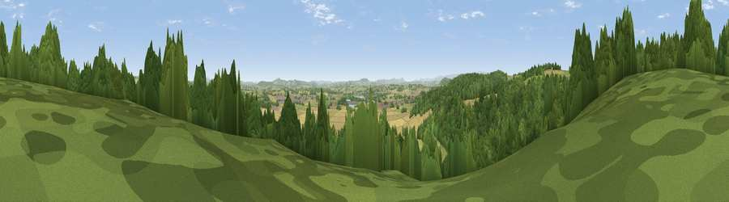

Viewpoint near Hope-under-Dinmore
#9706 in England · top 28% of its area beats it · near Hope-under-DinmoreWhere it is
The exact computed spot (SO 50525 50875). Click the marker for map links.
The view, rendered

A 360° render of this exact spot computed from the terrain model, tree cover and land cover — summer colours, afternoon light, calibrated against photographs of famous viewpoints. Real trees, hedges and buildings will differ in detail.
The panorama
Grey silhouette: terrain skyline in each direction (720 bearings, Earth curvature and refraction included). Dashed green: skyline with trees (+15 m) and buildings (+8 m) as obstacles. Blue strip: how far the ground is visible on each bearing.
Where the view opens
Wedge length = distance to the farthest visible ground on that bearing (vegetation-aware). Rings at 10, 25 and 50 km.
What fills the view
37% woodland · 31% cropland · 30% grassland · 1% built-up ·
Angular shares of the visible panorama (visual magnitude), not map area. Landscape diversity 0.51 (0–1 Shannon).
Key numbers
More beautiful places nearby
The staircase of upgrades: each row has a higher view potential than everything closer. Driving times are estimates from straight-line distance, calibrated against real road routing — check an actual route before setting out.
| Place | Direction | Drive | Score |
|---|---|---|---|
| Viewpoint near Bodenham | ENE · 2 km | ~4 min | 71.4 |
| Viewpoint near Westhope | W · 5 km | ~11 min | 73.8 |
| Viewpoint near Westhope | WNW · 5 km | ~11 min | 77.0 |
| Viewpoint near Weobley | WSW · 10 km | ~19 min | 77.5 |
| Viewpoint near Weobley | W · 11 km | ~20 min | 79.7 |
| Seagar Hill | SE · 16 km | ~28 min | 82.1 |
| Gatley Hill | NNW · 19 km | ~33 min | 82.6 |
| North Hill | E · 27 km | ~43 min | 86.8 |
52.15393, -2.72456 · source: screening · position refined by local search. Computed location — check access rights before visiting.